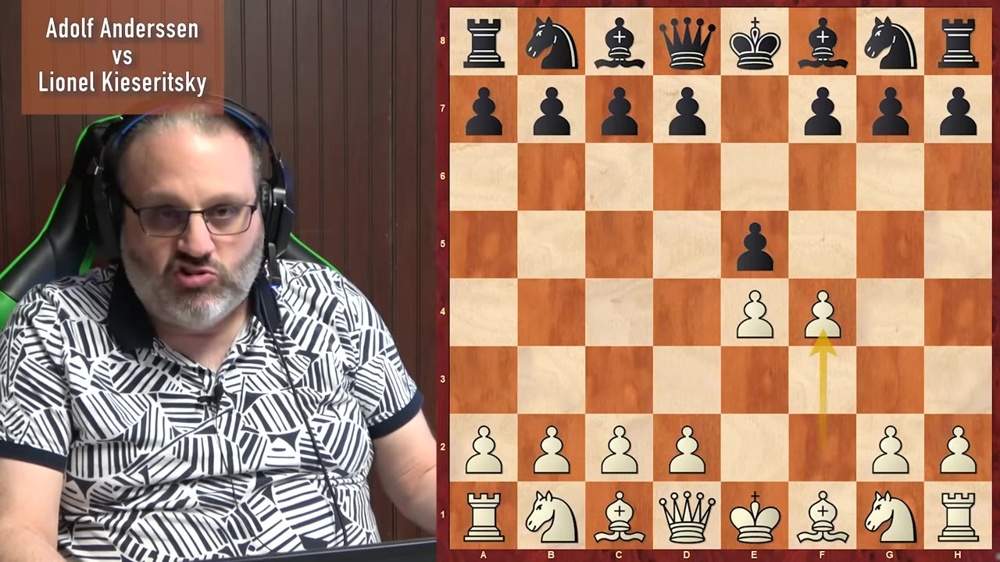
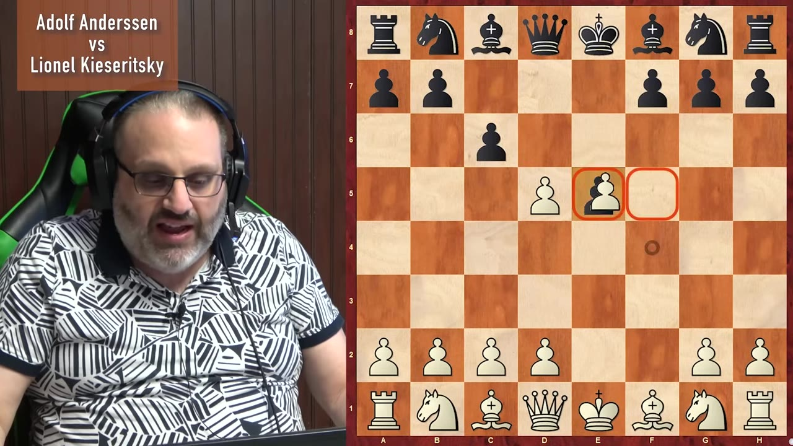
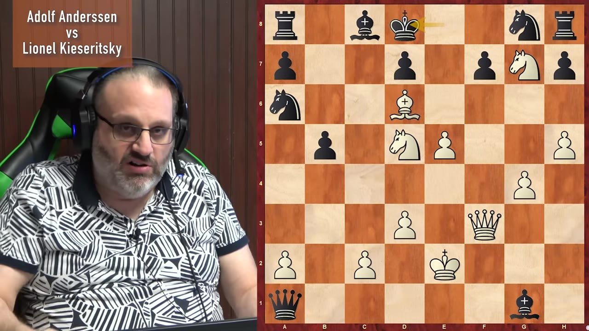
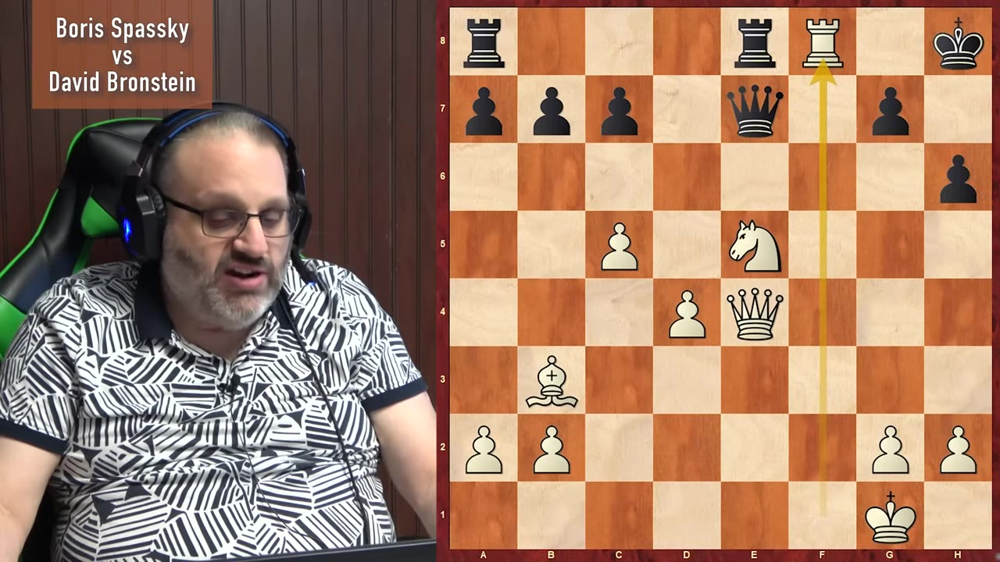
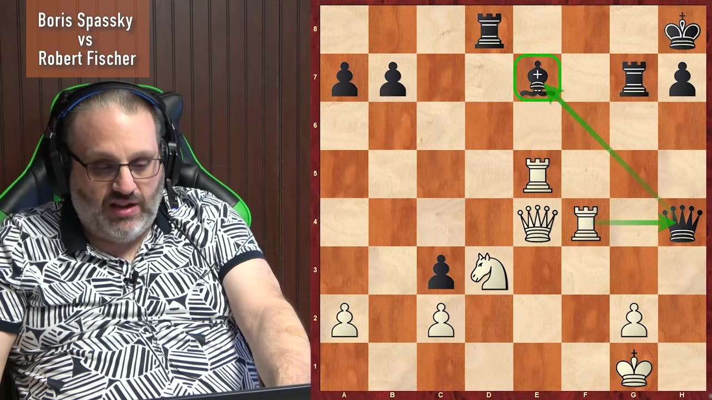
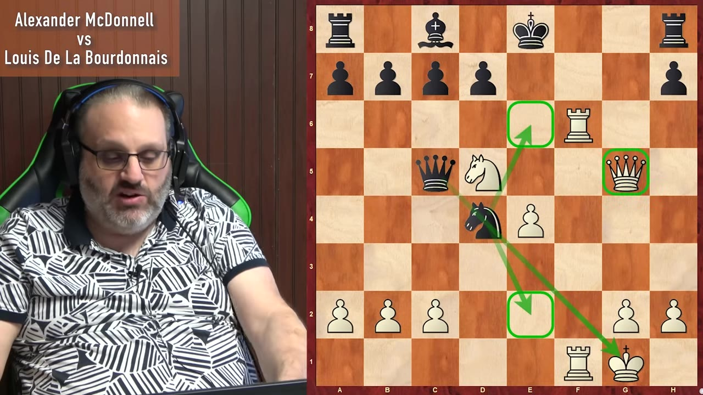

A grandmaster explains why an opening that 2800s won't touch is one of the best things you can play online — then walks four of the most famous attacking games ever recorded.
Watch on YouTubeThe King's Gambit isn't sacrificing your king, the same way the Queen's Gambit isn't giving your queen away. After 1.e4 e5 2.f4 White offers the f-pawn for the same reason c4 offers a pawn in the Queen's Gambit - trade a side pawn for a center pawn, make Black's e5-pawn disappear, then play d4 and own the middle. The bonus is the open f-file for the rook, since the f-pawn isn't sitting on f2 for the next thousand moves.

The difference from the Queen's Gambit is what the opponent does with the offer. In the Queen's Gambit most players decline with c6 or e6. In the King's Gambit, most players just take.
Super-grandmasters don't play f4 — they think it's suspicious, and at 2800 they're probably right. But what's suspicious for Magnus Carlsen isn't suspicious for everybody. Roughly 90-plus percent of chess now is online blitz, bullet and rapid, and in a fast game the side that knows the opening better wins. If you have Black, you face the King's Gambit maybe once a year and forget your one prepared line. If you have White and study it, your opponent simply cannot spend as much time on it as you do.

The one rule that matters for either color - White does not want to play f-takes-e5. Because White played f4, Black gets the option of Qh4+, and after a careless king move or g3 the attack writes itself.
If you like boring, solid, London-opening kind of chess, maybe the King's Gambit is not for you.— Ben Finegold
Adolf Anderssen vs. Lionel Kieseritzky, London 1851 - the most famous King's Gambit game ever, and the one people who aren't very good will tell you is the greatest game of all time. Black grabs material and keeps grabbing; White keeps developing. By the finish White has given up both rooks and the queen and has almost no material left - but the pieces he does have are good pieces.

The point isn't that an engine approves; run an engine and it won't like the game. The point is that Black has exactly one way to defend at each move and won't find it.
If you don't like being down a piece and crushing your opponent, the King's Gambit is not the opening for you.— Ben Finegold
Boris Spassky vs. David Bronstein, USSR Championship 1960 — the game from the opening scene of the Bond film, where the director moved a few pieces around and renamed one player "Kronsteen." Bronstein, of all people, chose the quiet equalizing line with d5 and a passive setup. Bronstein wanted to attack; Spassky, with White, attacked first.

The losing move was a knight sacrifice on f7 and a quiet bishop drop to f5 - a reverse Novotny, where one square blocks both the queen's and the rook's defense at once. After Qe4+ Black resigned.
The difference between a lower-rated player playing knight d6 and Spassky playing knight d6 is Spassky calculated a million moves ahead.— Ben Finegold
Boris Spassky vs. Bobby Fischer, 1960 — Fischer was 17, and not yet as good as Spassky. A quieter King's Gambit that mostly looks like a normal game; set the middle position up cold and a lot of grandmasters couldn't tell you it was a King's Gambit at all. Fischer was up a pawn or two, but the pawns were terrible and every White piece was great.

The decisive sequence - Rf8 was the blunder, then Fischer missed Re5, hitting the queen on a square it can't leave because the bishop behind it is pinned and overworked. Fischer wrote about choking on his own rage over this one in My 60 Memorable Games.
White centralizes, Black's extra pawns don't matter
an overworked bishop guarding two things at once
a pawn or two means nothing when your king is open
Alexander McDonnell vs. Louis de La Bourdonnais, London 1834 — from a marathon series of matches that ran for years. According to an old Rybka analysis at ten minutes a move, McDonnell played with no mistakes; in 1834 essentially every move was a mistake, so playing none made him look like Morphy before Morphy existed. White sacrifices a bishop just to gain time, keeps checking, and never lets Black develop.

There's a tell in these old games — Black's queenside bishop never moves the entire game. The recurring lesson across every attacking masterpiece is the same one - maybe Black should have developed his pieces.